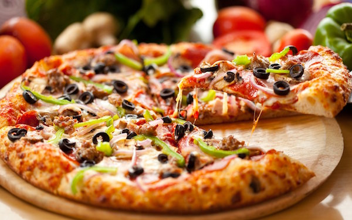

MO'S PIZZA
Mo's Pizza is famous at Pine City Zoo for serving the most delicious pizzas made fresh every day. With a wood-fired oven and the freshest ingredients, you can choose from margherita, pepperoni, chicken mayo and even vegetarian options. The smell of fresh pizza will guide you straight to us!
It is a family-friendly restaurant with both indoor and outdoor seating, so you can watch the giraffes and zebras while you eat. The portions are big, the prices are fair, and the service is super fast, perfect for hungry kids after a long day of walking.
Mo's Pizza also serves cold drinks, milkshakes and ice cream to cool you down on hot days. It is the favourite lunch spot for most visitors.
WHERE WILL YOU FIND IT
Mo's Pizza is next to the amphitheatre, at the main food court area.